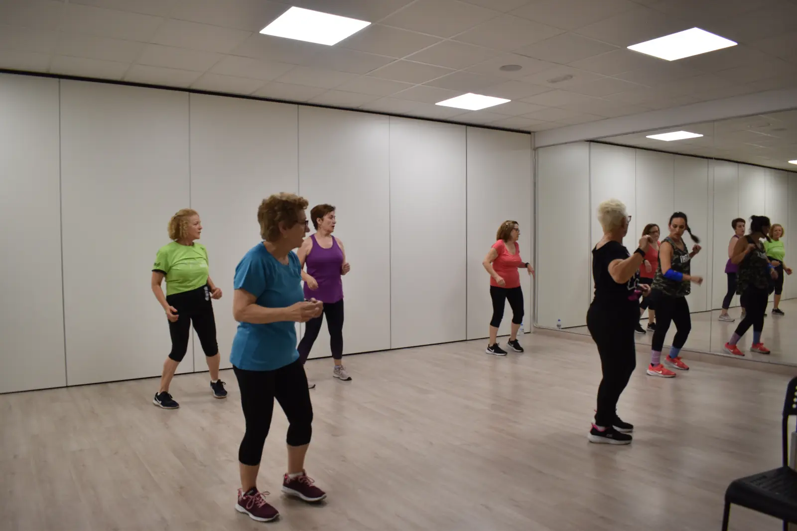
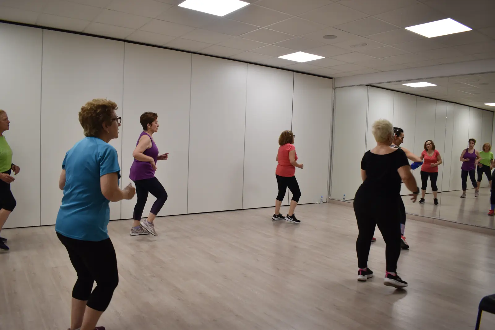
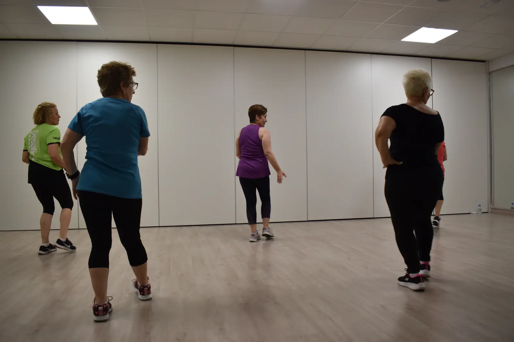
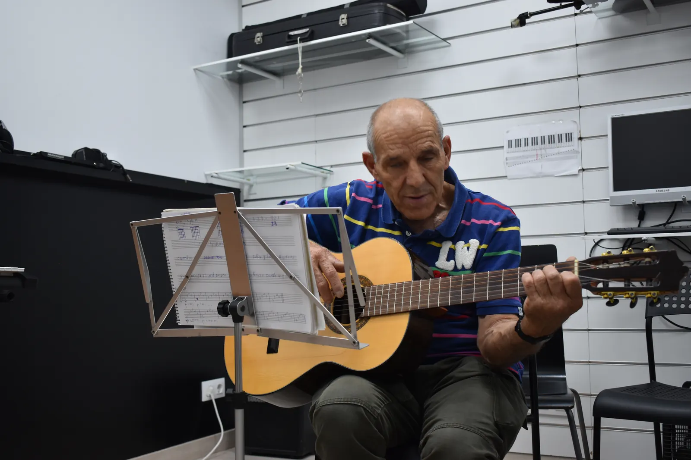

10:00 - 11:00
Siete Notas · Leganés · Madrid
Senior
Actividades Senior en Leganés pensadas para mantener el cuerpo activo, mejorar la movilidad y disfrutar del movimiento en un ambiente cercano.
+
Movimiento, baile, ritmo y bienestar para seguir activo en un entorno positivo y acompañado.
01
Movilidad y energía
02
Baile y coordinación
03
Ambiente cercano
04
Bienestar diario
Gimnasia y baile para sentirse mejor
Las clases Senior están pensadas para personas que quieren mantenerse activas, mejorar su movilidad y disfrutar de una actividad física adaptada, entretenida y social.
Combinamos ejercicios de gimnasia suave con baile y coordinación para trabajar el cuerpo de forma progresiva, cuidando el ritmo de cada persona y creando un espacio agradable.
Horarios Senior
10:00 - 11:00
11:00 - 12:00
12:00 - 13:00
Horarios sujetos a disponibilidad. Consulta grupo, nivel y plazas antes de reservar.
Experiencia Siete Notas
Actividades senior en Leganés para moverse, socializar y sentirse mejor
El área Senior de Siete Notas está pensada para personas que desean mantenerse activas en un entorno amable. Las sesiones combinan movilidad, coordinación, ritmo suave y ejercicios adaptados para mejorar energía, equilibrio y bienestar diario.






Beneficios
Qué aporta esta actividad
Movimiento adaptado
Ejercicios pensados para mejorar movilidad, coordinación y confianza corporal.
Ambiente cercano
Grupos amables donde cada persona se siente acompañada y escuchada.
Bienestar físico
Trabajo suave de postura, memoria corporal, respiración y resistencia.
Socialización
Un espacio para compartir, disfrutar y mantener una rutina activa en Leganés.
Cómo son las clases
Un método cercano, práctico y motivador
Las clases combinan explicación, práctica, corrección y acompañamiento. La idea es que cada persona se sienta cómoda, pueda preguntar y avance con una estructura clara.
Activación
Movilidad suave y preparación del cuerpo.
Coordinación
Ejercicios sencillos para memoria y equilibrio.
Ritmo
Dinámicas con música para disfrutar del movimiento.
Vuelta a la calma
Respiración, estiramientos y cierre de sesión.
También puede interesarte
Otras actividades de la escuela
Ven a probar una clase
Si buscas actividades senior en Leganés, gimnasia para mayores, baile senior, movilidad, coordinación y bienestar. en Leganés, en Siete Notas te orientamos según edad, nivel, objetivos y disponibilidad.
Solicitar informaciónPreguntas frecuentes
Dudas habituales antes de apuntarte
¿Cómo elijo grupo?
Te orientamos según edad, experiencia previa, disponibilidad horaria y objetivo personal.
¿Puedo empezar desde cero?
Sí. Muchas actividades cuentan con niveles de iniciación y grupos adaptados.
¿Las actividades senior son intensas?
No necesariamente. Se adaptan para que cada persona trabaje de forma segura y cómoda.
¿Puedo apuntarme si hace tiempo que no hago ejercicio?
Sí. La idea es empezar de forma progresiva y mantener una rutina saludable.
¿Hay horarios de mañana?
Los horarios pueden variar por grupo; lo mejor es consultar disponibilidad actual.